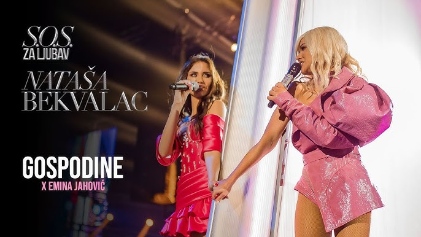
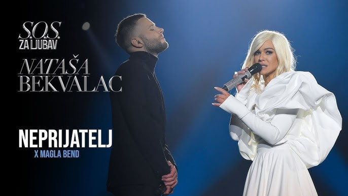
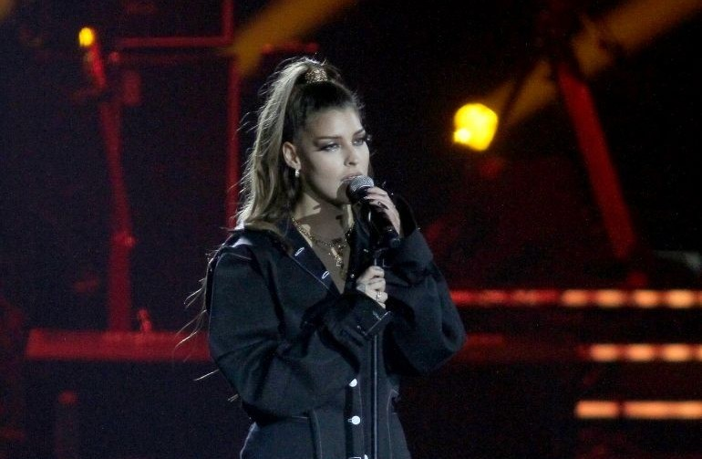

Gosti koncerta
Na spektakularnom koncertu "S.O.S. za ljubav", Nataši su se na sceni pridružili posebni gosti, svaki sa svojim jedinstvenim doprinosom večeri punoj emocija, muzike i ljubavi.

Emina Jahović
Jedna od najbliskijih prijateljica Nataše Bekvalac, Emina je s njom izvela dirljiv duet. Njihova dugogodišnja povezanost i slična energija osjetile su se na sceni u svakom tonu.

Magla Band
Publika je s oduševljenjem dočekala nastup Magla Banda, čiji je moderni pop zvuk idealno upotpunio večer. Njihova energija i suradnja s Natašom pokazali su sjajnu muzičku kemiju.

Zoi
Mlada i sve popularnija Zoi, poznata i po tome što je Natašina rođakinja, donijela je svježinu i emociju u svoj nastup. Njihova zajednička izvedba bila je generacijski most i snažna ženska poruka.